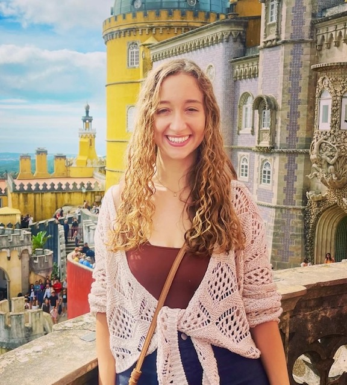
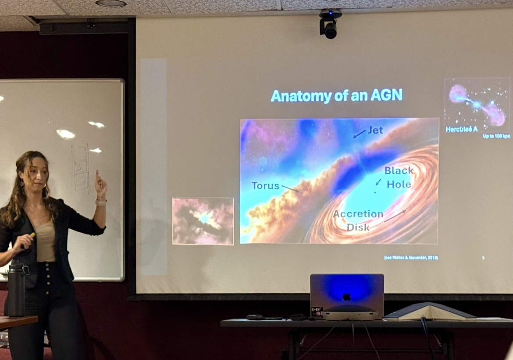
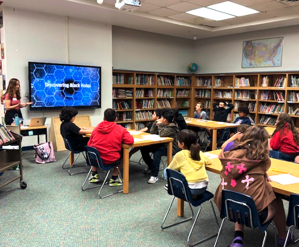

Research
From spatially resolved AGN emission at cosmic noon to molecular gas in the circumgalactic medium.
Explore research →Postdoctoral Researcher · National Radio Astronomy Observatory
My research explores how active supermassive black holes drive galaxy evolution during cosmic noon, the peak epoch of galaxy growth. By combining observations from the James Webb Space Telescope and leading radio observatories, I investigate the connection between black hole activity and the gaseous reservoirs that fuel star formation. Outside of research, I enjoy bringing modern astrophysics into student classrooms through education and outreach.
Explore my work
Research, science communication, and astronomy education.
From spatially resolved AGN emission at cosmic noon to molecular gas in the circumgalactic medium.
Explore research →
Sharing discoveries about black holes and galaxy evolution with scientific and public audiences.
Explore Talks →
Making astrophysics accessible through student engagement and hands-on learning.
Explore Education & Outreach →